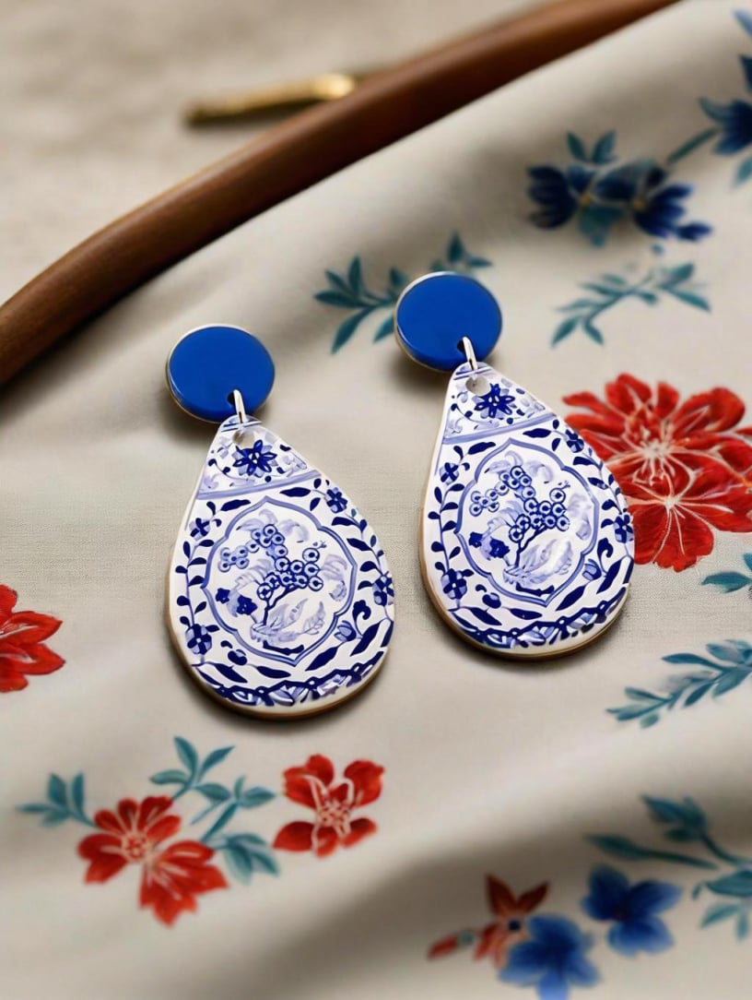
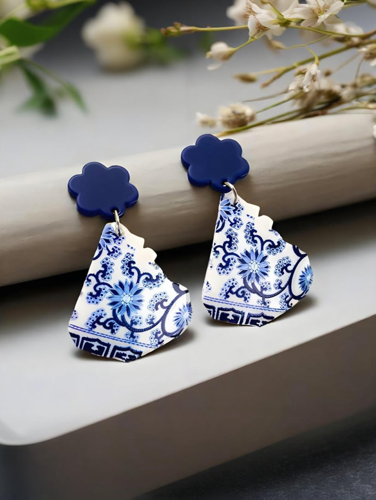
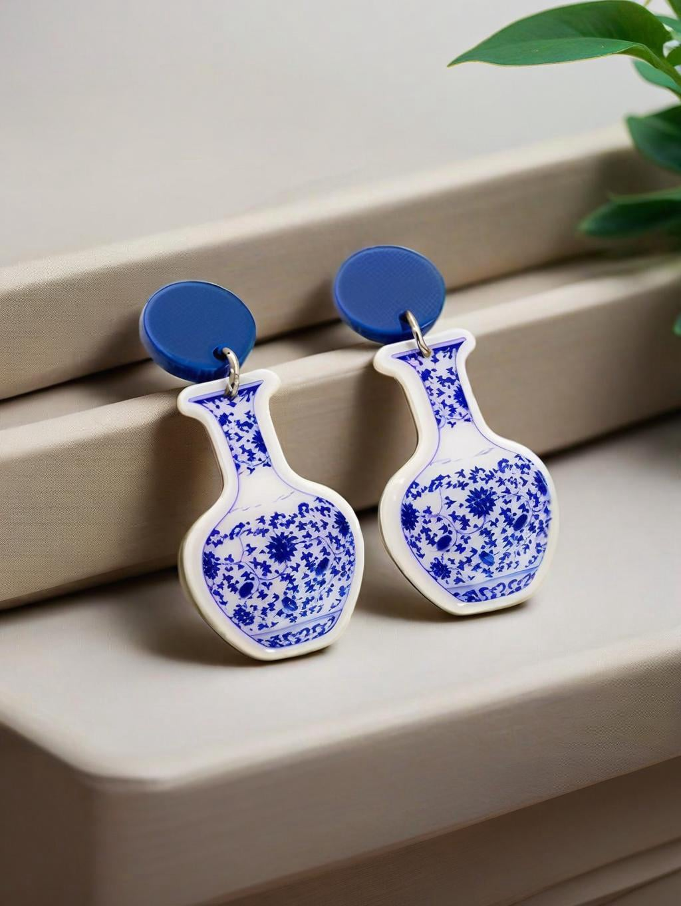
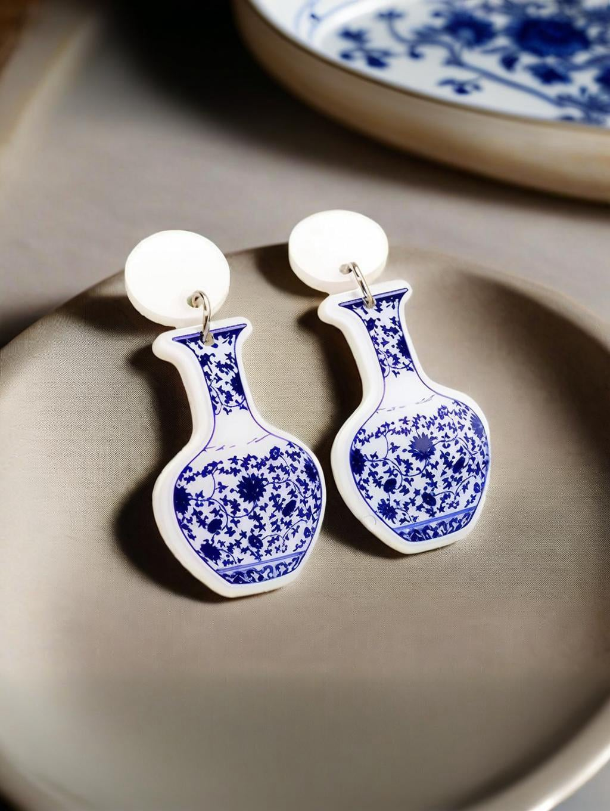
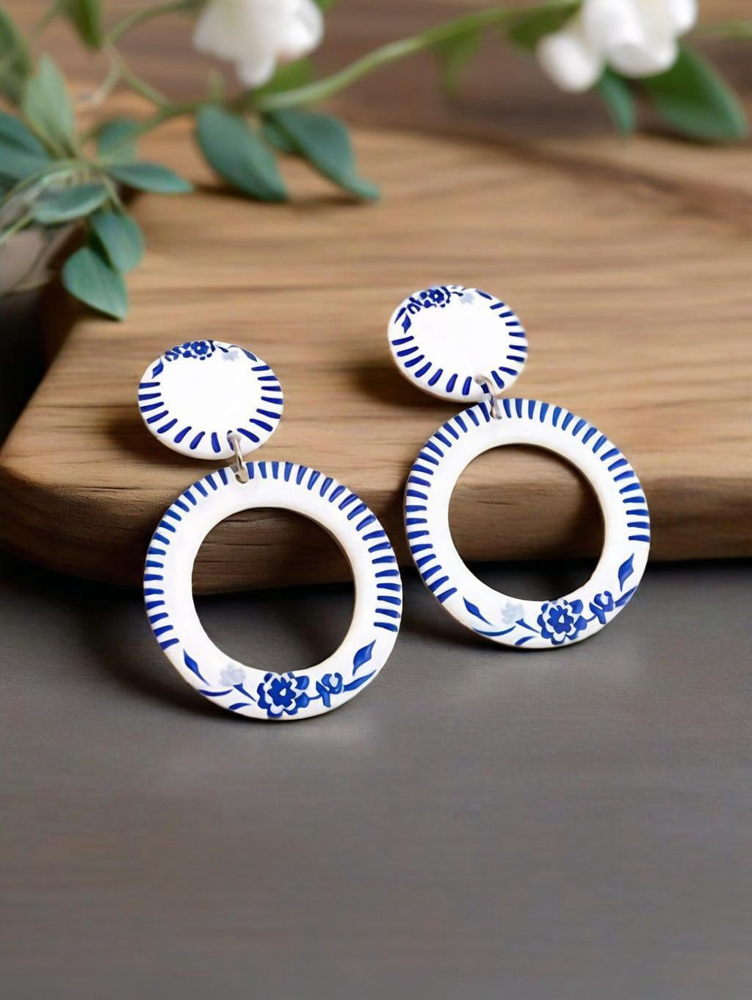

Сине-белый фарфор зародился в Цзиндэчжэне во времена династии Юань и на протяжении более 600 лет является всемирно известной иконой классической китайской эстетики. Древние мастера использовали белый фарфор как холст, а природную кобальтовую руду — как чернила, создавая горные пейзажи и переплетающиеся виноградные лозы всего двумя цветами — синим и белым. Этот минималистичный, но изысканный визуальный язык несёт в себе мягкую, сдержанную элегантность Востока, сочетая художественную красоту, традиционные благоприятные значения и положительную энергию фэншуй.
I. Сине-белый: классическая эстетическая основа с благоприятной энергией
На протяжении столетий сине-белый фарфор сохраняет свою фирменную двухцветную палитру. Это не просто эстетический выбор — это глубоко укоренено в традиционной философии Пяти Элементов и мудрости благословений.
Белый фарфор – ассоциируется с Металлом (金). Белый соответствует «пустому пространству» в китайской живописи тушью — символизируя чистоту, ясность ума и открытость. В фэншуй энергия Металла привлекает благородных покровителей и растворяет конфликты. Считается, что ношение белого очищает негативную энергию, принося мир и плавный прогресс во всех начинаниях.
Природный кобальтово-синий – ассоциируется с Водой (水). Приглушённый, туманно-голубой оттенок происходит от натуральных минеральных пигментов, вызывая в воображении далёкие небеса и спокойные озёра. Энергия Воды управляет богатством, мудростью и долговременной жизненной силой.
Вместе синергия Металла и Воды в синем и белом создаёт сбалансированное, текучее энергетическое поле — считается, что оно накапливает удачу и поддерживает стабильный карьерный рост. Ненасыщенная сине-белая палитра идёт к любым оттенкам кожи и легко сочетается с любой одеждой, неся в себе уникальное китайское чувство тихой элегантности и изысканного вкуса.
II. Традиционные мотивы: благословения, вплетённые в каждую деталь
Декоративные узоры на этих серьгах точно воспроизводят классические рисунки императорских печей династий Мин и Цин. Все мотивы отличаются плавными, округлыми линиями — которые, согласно фэншуй, привлекают позитивную энергию и отталкивают негативные влияния. Каждый узор несёт своё благословение:
• Переплетающиеся цветочные виноградные лозы – непрерывные побеги символизируют вечные благословения, процветание семьи и долговременное богатство.
• Круговые узоры и замкнутые геометрические формы – неразрывные, замкнутые петли символизируют полноту и единство. Считается, что замкнутый дизайн охраняет богатство и удачу.
• Минималистичные цветочные, лиственные и пейзажные мотивы – чистые и изысканные, эти дизайны успокаивают ум, смягчают присутствие и, как полагают, привлекают полезных наставников и союзников.
• Силуэты в форме вазы – китайское слово «ваза» (瓶, пин) созвучно слову «мир» (安, пин). Этот дизайн несёт пожелание безопасности и защиты во все времена года.


III. Древнее искусство, современное ношение: эстетика сине-белого фарфора, переосмысленная в серьгах
Традиционные фарфоровые изделия — будучи большими, тяжёлыми и хрупкими — лучше всего ценятся как выставочные предметы и с трудом поддаются включению в повседневную носку. Наши дизайнеры деконструировали классические силуэты сосудов, аутентичные сине-белые палитры и легендарные благоприятные мотивы, переосмыслив их как лёгкие, носимые серьги — превращая музейную классическую красоту в повседневные аксессуары.
Коллекция отличается богатым разнообразием силуэтов: изогнутые фарфоровые осколки, классические формы ваз, веерообразные панели, круги, капли, ромбы и лиственные формы — все они достоверно воспроизводят традиционные линии, нарисованные вручную сине-белым фарфором, при этом смягчая вес древности, чтобы соответствовать современному повседневному стилю.
Вам не нужно коллекционировать крупные антикварные фарфоровые изделия. Одна пара серёг у вашего уха несёт элегантность классической китайской эстетики, балансирующую энергию фэншуй и полный набор вечных благословений Востока.
Кураторский выбор Banibuba
Banibuba представляет вам кураторскую коллекцию китайских серёг в стиле сине-белого фарфора — созданных для тех, кто ценит классическую восточную культуру. Каждое изделие наследует аутентичную сине-белую палитру и традиционные благоприятные мотивы, неся в себе столетия изысканной элегантности и тихие благословения мира и процветания.

Акриловые серьги-полумесяцы, вдохновлённые сине-белым фарфором

Акриловые серьги-капли с традиционным синим цветочным узором

Акриловые серьги с узором китайской сливы

Двухслойные акриловые серьги-капли с синим цветочным узором

Сине-белые акриловые серьги в форме веера

Акриловые серьги синего цвета, вдохновлённые китайской вазой

Серьги из акрила в форме белой вазы с синим узором

Круглые сине-белые серьги с переплетающимся цветочным узором

Серьги из акрила в форме изящной вазы с синим узором

Сине-белые акриловые серьги с узором в виде листьев

Акриловые серьги синего цвета с узором снежинок

Акриловые серьги с узором в виде волны и ромбов

Акриловые серьги в китайском стиле в форме ивовых листьев

Синие серьги с узором в виде ромбов и листьев

Акриловые серьги-кольца синего цвета с узором листьев

Двойные сине-белые акриловые серьги-кольца

Ажурные серьги-кольца с цветочным узором в стиле синего фарфора

Сине-белые акриловые серьги арочной формы